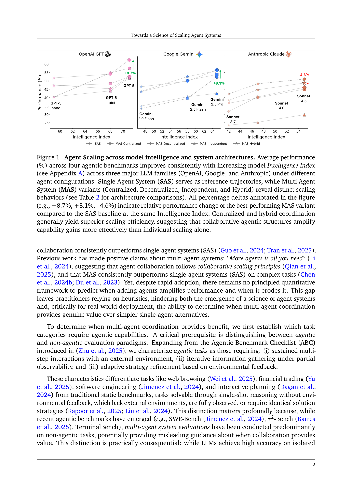
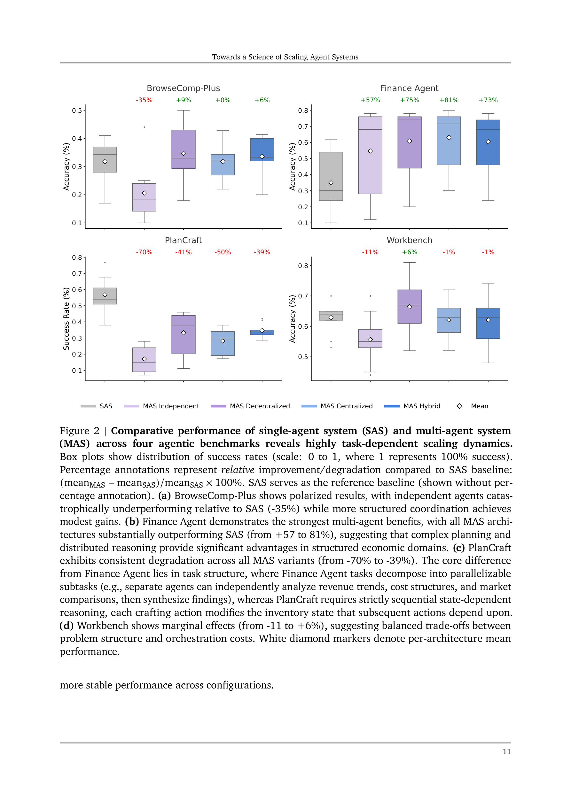

Figure 1

Figure 2
LLM 기반 에이전트 시스템의 정량적 스케일링 원리를 도출한 연구이다. "More agents is all you need"라는 기존 주장에 반대하여, 멀티 에이전트 시스템(MAS)의 효과는 에이전트 수가 아닌 아키텍처-태스크 정합성(architecture-task alignment)에 의해 결정됨을 180개 통제된 구성(3개 LLM 패밀리 x 5개 아키텍처 x 4개 벤치마크)에서 실증한다. 경험적 조정 메트릭을 사용한 혼합 효과 모델(R^2=0.524)을 도출하여, 미지의 태스크에 대해 87% 정확도로 최적 아키텍처를 예측한다.
에이전트(추론-계획-행동의 반복적 사이클)가 실세계 AI 응용의 지배적 패러다임이 되고 있으나, 성능을 결정하는 원리가 탐구되지 않아 실무자들이 휴리스틱에 의존하고 있다. 기존 MAS 평가는 (1) 서로 다른 프롬프트, 도구, 계산 예산을 사용해 아키텍처 효과와 구현 선택을 혼동하고, (2) 최종 정확도만 보고하며 조정 오버헤드, 오류 전파, 정보 흐름 같은 프로세스 역학을 무시한다. 또한 비에이전틱(non-agentic) 벤치마크에서의 MAS 평가가 협업 가치에 대한 잘못된 지침을 제공할 수 있다.
Topology-dependent error amplification: Independent 에이전트는 오류를 17.2배 증폭, Centralized는 4.4배로 억제.
극적인 태스크 의존성: Finance Agent에서 Centralized MAS +80.8%, PlanCraft에서 모든 MAS 변형이 -39%~-70% 성능 저하. 핵심 차이는 태스크 분해 가능성(decomposability) vs 순차적 의존성.
예측 모델: 혼합 효과 모델(20개 파라미터, R^2_CV=0.524)이 카테고리 아키텍처 레이블(R^2_CV=0.43)이나 지능 지수만(R^2_CV=0.28)보다 우수. 87% 정확도로 최적 아키텍처 선택 예측.
Out-of-sample 검증: 연구 후 출시된 GPT-5.2에서 MAE=0.071, 5개 중 4개 스케일링 원리가 일반화됨 확인.
에이전틱 평가 형식화: 에이전틱 태스크의 세 가지 필수 조건(지속적 다단계 환경 상호작용, 부분 관측 하 반복 정보 수집, 피드백 기반 적응적 전략 개선)을 정의.
에이전트 시스템 설계를 휴리스틱에서 원리 기반(principled) 접근으로 전환시키는 시의적절하고 중요한 연구이다. 180개 통제 구성의 실험 규모, 혼동 요인 제거를 위한 방법론적 엄밀성, 그리고 "에이전트 수가 아닌 아키텍처-태스크 정합성이 핵심"이라는 실용적 메시지 모두 높이 평가할 만하다. 특히 Finance Agent(+81%)와 PlanCraft(-70%)의 극적 대비는 태스크 분해 가능성이라는 핵심 변수를 설득력 있게 보여준다. R^2=0.524는 "과학"이라기보다 "과학을 향한(towards)" 수준이지만, 이 분야에서 최초의 체계적 정량화라는 점에서 의의가 크다. GPT-5.2 out-of-sample 검증은 일반화 가능성을 강화하나, SAS 과대 예측은 프레임워크의 외삽 한계를 솔직히 드러낸다.